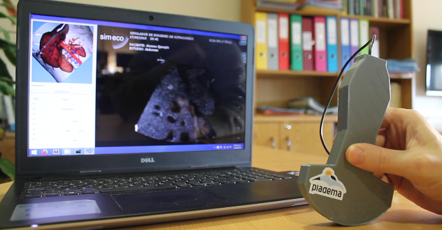
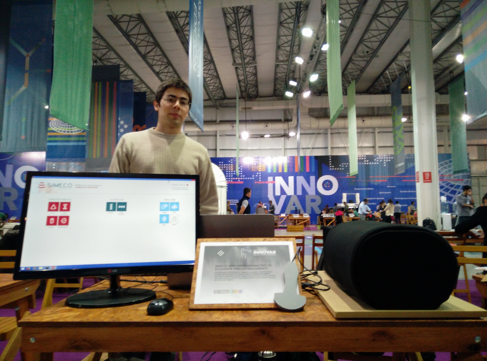
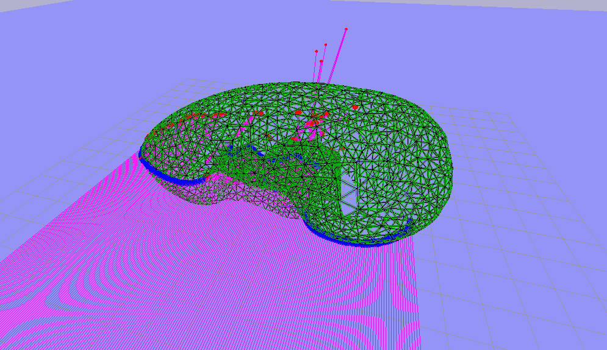
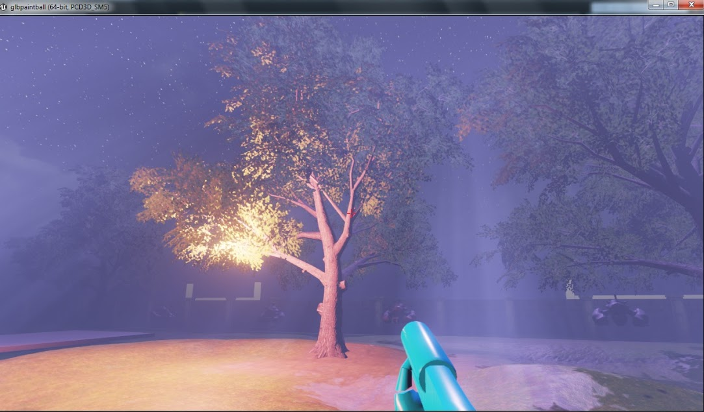
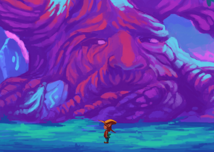
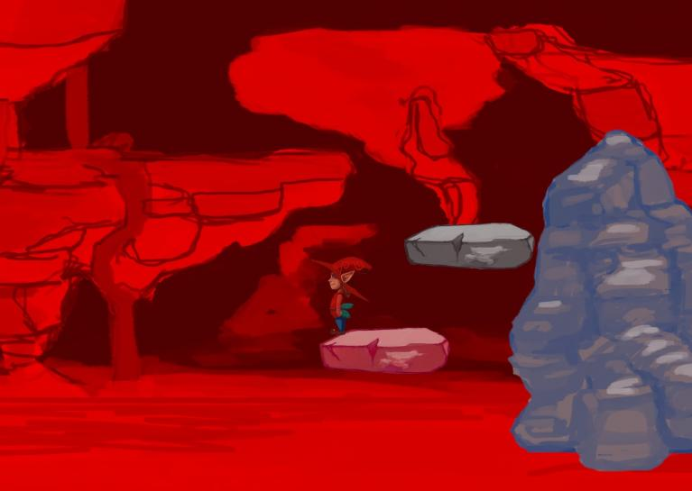

Welcome
My name is Pablo, though everyone calls me Blito. I'm a Software Engineer currently building Cost & Usage Insights products at AWS.
I have been learning about and developing highly available distributed systems for about two years. The daily challenges I face involve dealing with data at a massive scale, in the order of terabytes a day, and building and maintaining algorithms that process that data within time and memory constraints. For this I use mostly scala, some Java, Apache Spark and a wide array of AWS products (SNS, SQS, Lambda, EMR, S3, DynamoDB, and more).
In my immediately previous life, I used to be a C++ developer. I worked for 3 years in high-performance code bases of very different nature. First, as a Platform Engineer for the PlayStation Network; then as a developer of a desktop Ultrasound Simulator (more on that below!)
This is a brief summary of some projects I have worked on, most of them on my free time.
I am passionate about things like privacy, the free software movement, game development, high-performance systems and sustainability. If you have an open position and you think I can be a multiplier, feel free to contact me at pabloarubi at gmail.
Projects
- SimEco
- Recreito
- Unreal Engine FPS Demo
- Unity RTS Demo
- Bullet Demo
- I am Mutsu, please save me!
- League of Legends Wikia
- Escape de Scylla
SimEco
My previous job.
SimEco is a learning platform for Ultrasound technicians. At its core is an Ultrasound Simulator, although some other layers live on top of that (like practice exercises).
We create a 3D world with a human torso (using a CT scan's output as a source), and place a virtual transducer on top of it. The transducer is orientated by the student using a 3d-printed transducer with an AHRS chip on it (check out this repo for a small example of it), simulating a real version of it. The positioning of the transducer is done using a home-made sensible skin wrapping a styrofoam cylinder that acts as a torso. The skin sends pressure info to an Arduino, which in turn sends the processed data to the computer via USB.
SimEco is designed as a layered application. At the top, a UI made with Qt5 displays menus, handles user events and renders the underlying layer's output: the simulation itself. The second layer is the simulator's core, and is built as a statically linked library. It runs using a game-loop structure, with modules that gather user input (from the AHRS chip, keyboard and the skin) and feed a simulation pipeline. Some parts run in a parallel fashion, like the tracking algorithms for the AHRS and Qt's main thread; some others -like raycast algorithms- make heavy use of OpenMP's features, especially the fork-join pattern for spawning multiple threads.
The core loop uses a raycast algorithm beginning from the tip of the transducer -across the virtual torso- to simulate the ultrasound wave front. The algorithm calculates echoes along the ray, and draws them accordingly, resembling an ultrasound image. This is all done in real time, as students use the transducer to redirect the raycast and discover internal anatomic structures within the body.
Simeco runs in Linux and Windows, and it is aimed to run smoothly on cheap computers (currently at 40fps in a i7-3610QM without dedicated GPU).
I have been a part of the team since the project started, and the only member with previous C++ professional experience. As such, I have taken the personal goal to push everyone's knowledge, especially mine.
Code isn't public, though some of the experiments I've been doing in the background are. Check them out here, here and here!
Publications
During my stay at this job I started a PhD in Applied Mathematics. Life got in the way and I didn't finish it (...yet?). However, I got away with a few sweet publications!
- Comparison of real-time ultrasound simulation models using abdominal CT images
- Efficient scatter model for simulation of Ultrasound images from Computed Tomography data
Screenshots



Technologies used
C++11 (lambdas, threads, smart pointers, and other new features), VTK, Qt5, OpenMP, OpenCV, glm, psmoveapi, Google Test, CMake, git.
Recreito
[2015, go to repo]
Second attempt at doing a 3D world from scratch. This time using newly acquired knowledge and spending a little more time thinking before coding.
The original idea was to learn modern OpenGL (ie. shading, lightning systems, etc), make a more robust build system, and integrate it with other libraries such as BulletPhysics and Assimp. After doing most of it (BulletPhysics still missing), I decided I would refactor the existing code to an Entity-Component-Systems architecture. So far, most of the work has been reading various implementations, although some tests indicate that it shouldn't be too hard to change what I have up to this point.
The project has been a good place to learn lightning systems, which I implemented following the tutorials at
Screenshots
Technologies used
C++11, OpenGL3+, SDL2, glm, glew, SOIL, Assimp, CMake, git (using git submodules).
Unreal Engine FPS Demo
[2014, go to repo]
Initially called Paintball FPS game, since bullets were balls affected by gravity. This project was developed as a tech demo for the company I worked at, Globant. It aimed at giving a small team of developers and artists the oportunity to get their hands on the Unreal Engine 4 (back when license was paid).
The final prototype was far from having unique features, but it was a nice experience to see how things were made in a top-class engine. Some features included:
- Two levels with miniquests (push a button, kill a unit).
- Several weapons (with ammo system!).
- Interaction with environment objects (doors, damage over time platforms, etc).
- Pick ups and power ups.
- Patrolling and static enemies, with different behavioral trees.
- Triggers.
- Cinematics.
Screenshots

Technoogies used
Unreal Engine 4 (C++ and blueprints), Visual Studio, git.
Unity RTS Demo
[2014, go to repo]
Small project to get my hands on Unity... again.
Followed a few tutorials at first, and also implemented a few ideas of mine. Final result was a very simple RTS prototype, its features being:
- Camera control.
- Allied and enemy units.
- Unit behaviors: attack, move (using default pathfinding), reproduce (unit spawning), stay on guard.
- Multiple unit selection.
- Simple HUD.
Screenshots
Technologies used
BulletDemo
[2014, go to repo]
First attempt at doing a 3D world from scratch.
Integrated BulletPhysics, OpenGL (initially old OpenGL, eventually refactored to OpenGL3) and SDL. Ran into a lot of problems as I tried to include more functionality (like importing 3D models, applying lights, etc), so I decided to stop and get back once I got better. I eventually started Recreito, having learned some lessons:
- Fun (having a good time while doing it) comes first.
- It is fine to have a limited scope. This version of a 3d world may not be able to load every asset on Earth, or play sounds, or build on Linux, or render shadows, or have an AI engine, or... And it's ok.
- I should pay more attention to the build process if I want someone to be able to use it.
- Read several ways of doing something before writing code, even if our first idea works.
The project loads up a 3D space with the user being close to a few boxes and a cloth hanging in the air. User can move, turn, strafe, jump and shoot smaller boxes when clicking. The demo uses soft-body physics for the cloth, and allows the user to interact with it with boxes.
Screenshots
Technologies used
C++, BulletPhysics, OpenGL3, SDL2, Visual Studio 2010, git.
I am Mutsu, please save me!
[Global Game Jam 2014, GGJ site, go to repo]
Game developed for the Global Game Jam 2014, my first experience in an event like that. We worked for 36 hours straight, with a team that I met on site for the first time. It was overall a great experience: game design, collaboration, and a lot of mate!
The game was a side-scrolling platformer. The main mechanic consisted of picking up RGB-colored gems, and being able to switch colors on/off. Platforms would be colored, and turning them on/off appropriately was part of the puzzle.
Screenshots
 Technologies used
Other stuff
League of Legends Wikia
[2015, go to repo]
I have been playing League of Legends for the last 5 years. I first started playing in North America, and eventually moved to the Latin America South server. I realized the need for spanish resources for new players, so I decided to help -along with a friend- in the most popular League of Legends wikia.
Our first impression was that the spanish wikia had been abandoned for years. A few months later I had applied for moderator, and after that for administrator (my profile). For over a year, I spearheaded a collective effort towards building a new wiki for the game. By the end of it, visitors per week had risen from 7000 to more than 80000. My participation stopped for work-related reasons, but it was enough for a group of people to keep on editing on their own.
During my stay, I implemented a few scripts in Python to update the Free Champion rotation in a weekly basis. These scripts use the Riot REST API and the MediaWiki API to automatically update the required pages.
Escape de Scylla
Back in 2011 I participated in the Wiideojuegos 2011 contest, held by the Universidad Politécnica de Madrid, in Spain. We developed a game using Kinect -a novel device at the time- and got the first place award for Kinect category. The code eventually evolved into my thesis for becoming a Software Engineer: Game development framework for Kinect-based games.
The game consisted in a spaceship scientist awakened by the call of an emergency alarm. The player, playing as the scientist, had to escape from Scylla (the spacecraft) while getting rid of small nanobots attaching to his body. We developed the game in C++ using OpenFrameworks, Boost (mainly for Boost.Thread), and MSAPhysics (a small particle engine).